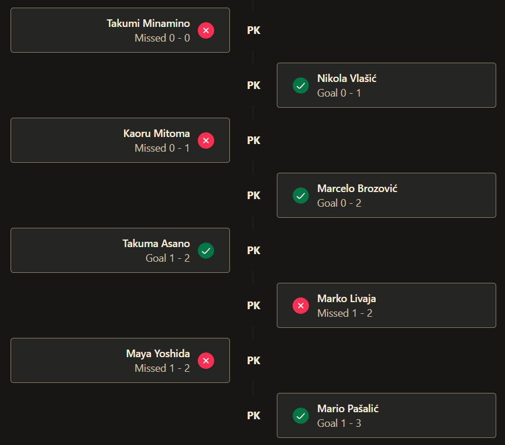
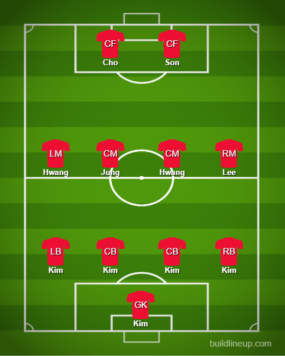

Day 16
Japan v Croatia and Brazil v South Korea

The first penalty shootout. Experience shines through and Brazil have a nice walk in the park. We have a quarterfinal between Brazil and Croatia. Japan’s dream run comes to an end. Croatia just have the experience with penalty shootouts. Brazil have fun for Neymar’s return. Let’s dive in.
Match 1
Croatia’s experience shines through. Japan should have been more attacking. Livakovic joins an exclusive club
We had our first-ever extra time and penalty shootout of this tournament. What is it with Croatia and penalty shootouts üòÇ? Both teams honestly were really lackluster with their passing and chance creation. Japan hardly had enough players in the box and Croatia was sloppy. The opener came from a Japan set piece and the ball fell toward Maeda from Yoshida and he wasn’t missing from that range. Perisic managed to bring Croatia back in after a great cross from Dejan Lovren of all people üòÖ. His cross made it easier for Perisic to just direct his header properly and it was placed perfectly. Later on, it was just a huge stalemate from both of them. In extra time Mitoma had a big chance for Japan and Majer for Croatia but they couldn’t finish. So we had penalties and Livakovic has joined an exclusive club of making 3 saves in a shootout along with Ricardo and Subasic(Croatian as well).
Japan

Croatia
Match 2
Brazil have fun. Korea needed a worldie for a goal. Neymar is one away from Pele.
What a FUN match to watch üòÅ. Korea stood no chance against them. I had one look at the lineup and I was scared. Neymar was immediately in the lineup after his injury. Danilo at LB and Lucas Paqueta as well but all of those were squashed really quickly. Brazil got underway in just 7 minutes when Raphinha’s cross came all the way to Vini Jr catching out the Korea defense and Vini stayed composed and placed it calmly past everyone. Next was a penalty which was kind of smart where Richarlison literally placed his foot in front of the defender trying to make the clearance and got hit. Neymar scored the resultant penalty and now draws one away from Pele. The third one could be a candidate for the goal of the tournament yet again. It starts with Richarlison juggling the ball on his head and passing it quickly between both center backs Marquinhos and Thiago Silva before having so much space and time to slot it away. The fourth was a cross that came to Paqueta who made the run and wasn’t even unmarked. Allison had work to do as well. He wasn’t left on his own. Made 3-4 good saves but sadly got beat by a great long-range effort from Korea. Tite actually gave Weverton a chance and with that, he has given minutes to everyone in his 26 man squad. Class act from him üëè.
Brazil
South Korea
